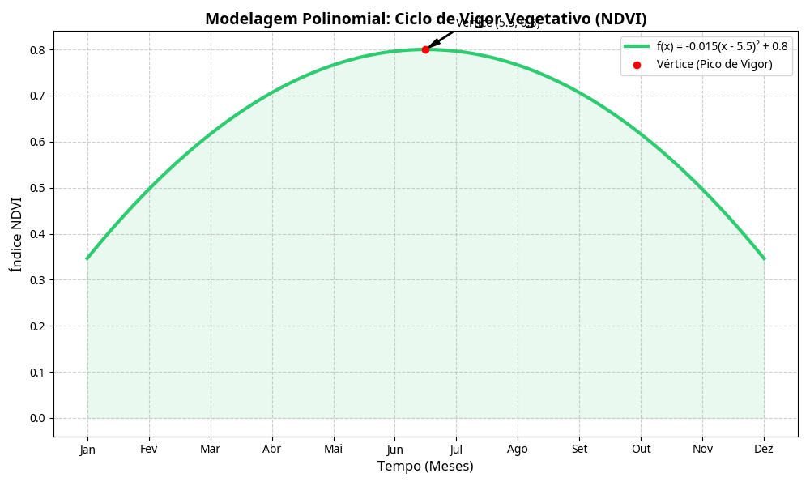
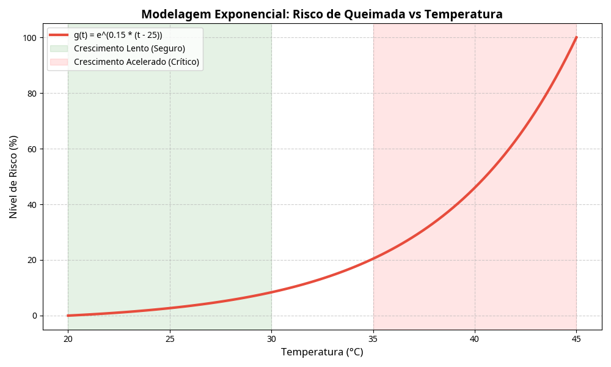

VISÃO ORBITAL PARA O CAMPO BRASILEIRO
TerraVis
Plataforma de inteligência orbital para monitoramento de lavouras, queimadas, enchentes e janela de plantio.
Saiba MaisO que é o TerraVis
O TerraVis é uma plataforma de inteligência orbital voltada ao campo brasileiro. Usando dados de satélites públicos e gratuitos — principalmente o programa Copernicus da ESA e o FIRMS da NASA — o sistema monitora quatro dimensões críticas para o produtor rural.
77%
dos produtores rurais no Brasil são pequeno porte
R$ 0
custo para acessar imagens do Copernicus
5 dias
revisita do Sentinel-2 sobre uma mesma área
3h
atualização dos focos de calor pelo FIRMS
Quatro riscos, zero informação
| Problema | Impacto | Dado orbital disponível |
|---|---|---|
| Lavoura doente sem detecção precoce | Perda de até 30% da produção por safra | NDVI via Sentinel-2 (ESA) |
| Queimadas sem alerta antecipado | Destruição de lavouras e pastagens | FIRMS/MODIS (NASA) - atualização a cada 3h |
| Enchentes sem monitoramento | Perda de solo, equipamentos e colheita | Sentinel-1 SAR - radar que atravessa nuvens |
| Plantio em época errada | Produtividade até 40% abaixo do potencial | Copernicus Climate Service - histórico 30 anos |
Nossas Soluções
Módulo NDVI
Lógica: Cálculo simulado com dados de entrada do usuário para saúde da planta.
Utiliza imagens do Sentinel-2 para gerar índices de vegetação e detectar anomalias precocemente.
Módulo Queimadas
Lógica: Índice de risco por temperatura, umidade e vento.
Alimentado pelo NASA FIRMS, permite detectar incêndios ativos próximos às propriedades e calcular riscos.
Módulo Enchentes
Lógica: Alerta por nível de rio e precipitação.
Baseado no Sentinel-1 SAR, um radar que atravessa nuvens e chuva para monitorar alagamentos.
Módulo Plantio
Lógica: Recomendação por cultura e período ideal do ano.
Cruza dados históricos de 30 anos do C3S para identificar o melhor período para cada cultura.
Como os dados são analisados?
Modelagem Matemática e Análise de Dados
Desenvolvemos modelos rigorosos para interpretar o comportamento de variáveis críticas no campo, utilizando funções que representam fenômenos reais.
1. Ciclo NDVI (Função Polinomial)
Definição: f(x) = -0.015(x - 5.5)² + 0.8
Justificativa: O vigor vegetativo segue um ciclo de crescimento, pico e senescência, perfeitamente representado por uma parábola de concavidade para baixo.
- Domínio: [1, 12] (Meses do ano)
- Imagem: [0.34, 0.8] (Variação do índice)
- Vértice: (5.5, 0.8) - Indica o pico de vigor em meados de Junho.

2. Risco de Queimada (Função Exponencial)
Definição: g(t) = e^(0.15 * (t - 25))
Justificativa: O risco ambiental não cresce de forma linear; após um limiar de temperatura, a probabilidade de ignição e propagação acelera drasticamente.
- Crescimento: Exponencial a partir de 30°C.
- Comportamento: Função estritamente crescente, indicando perigo crítico em ondas de calor.

Implementação e Rigor Técnico
O código Python realiza o processamento vetorial dos dados orbitais para alimentar estes modelos em tempo real.
# Cálculo de Risco Exponencial
def calcular_risco(temp):
return np.exp(0.15 * (temp - 25))
# Análise de Vigor Polinomial
def analisar_vigor(mes):
return -0.015 * (mes - 5.5)**2 + 0.8
Conectando dados reais do espaço
Copernicus Data Space — ESA
Fornece bandas espectrais para cálculo do NDVI e tecnologia radar SAR para detectar alagamentos mesmo com nuvens.
NASA FIRMS
Fire Information for Resource Management. Atualização a cada 3 horas sobre focos de calor globais.
Copernicus Climate Service — C3S
Histórico climático de 30 anos e previsões de médio prazo para coordenação de plantio e produtividade.